Abstract
Close-proximity inspection of geometrically complex space stations requires multiple inspector spacecraft to coordinate target allocation and execute six-degree-of-freedom maneuvers while satisfying collision-avoidance and surface-pointing constraints.
SafeHMARL links graph-based inspector-target allocation to goal-conditioned Safe-MAPPO control on SE(3). Each selected target conditions a shared decentralized full-pose policy, while CBF/HOCBF quadratic programs filter nominal commands for station clearance, inter-inspector separation, and surface pointing.
Safe Hierarchical Inspection
The high-level graph policy first selects nonduplicate surface tasks, the decentralized low-level actor produces full-pose control inputs, and the CBF/HOCBF layer filters those inputs before closed-loop propagation and MuJoCo contact validation.
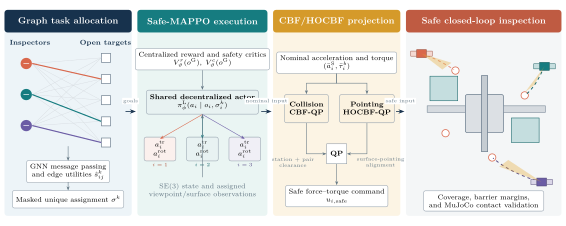
High level
Graph Task Allocation
A dense inspector-target bipartite graph represents spacecraft states, task geometry, path clearance, and completion status. Message passing adds team context to each edge utility, while a masked decoder samples unique open targets without heuristic labels or behavior cloning.
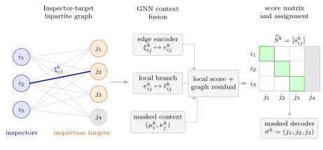
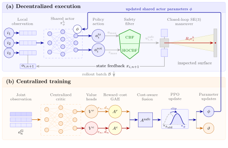
Low level
Safe-MAPPO SE(3) Control
A shared decentralized actor maps each local goal-conditioned observation to translational acceleration and body torque. Centralized reward and safety-cost critics train the actor with a safety-aware advantage, while execution remains decentralized across inspector spacecraft.
Safety layer
CBF/HOCBF Projection
Capsule and oriented bounding-box primitives approximate the Gateway keep-out geometry. Translational CBFs enforce station clearance and pairwise separation, and a rotational HOCBF constrains the sensor axis toward the assigned surface during inspection.
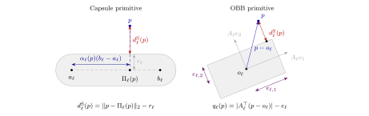
MuJoCo Gateway Environment
The Lunar Gateway model provides a heterogeneous station-scale inspection scene with pressurized modules, solar arrays, and distributed viewpoints. Colored trajectories identify the three inspectors, green markers denote open targets, red markers denote completed targets, and translucent yellow cones visualize the sensor axes.
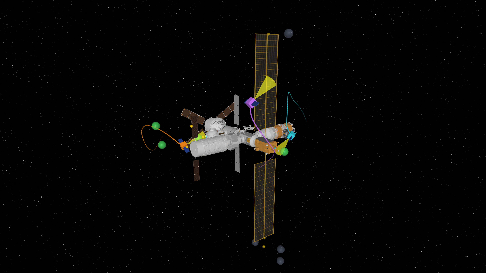
Training and Closed-Loop Results
The evaluation separates high-level relational learning, low-level safety-aware control, and execution-time filtering. Curves report independent training seeds and matched closed-loop evaluations under common target sets and initial conditions.
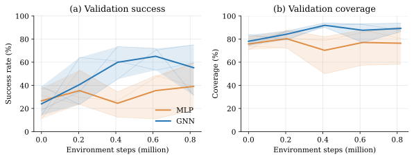
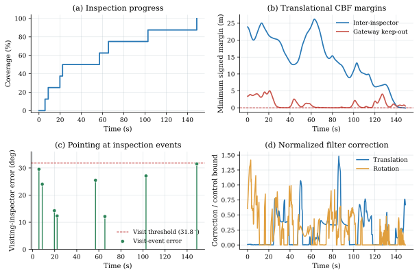
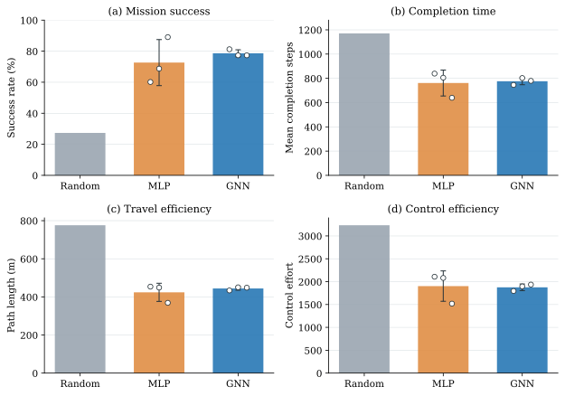
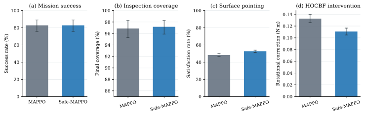
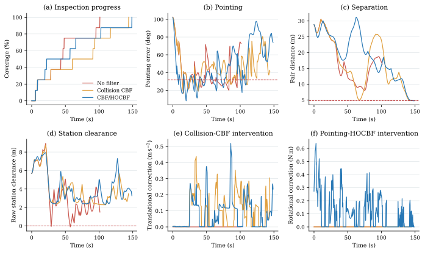
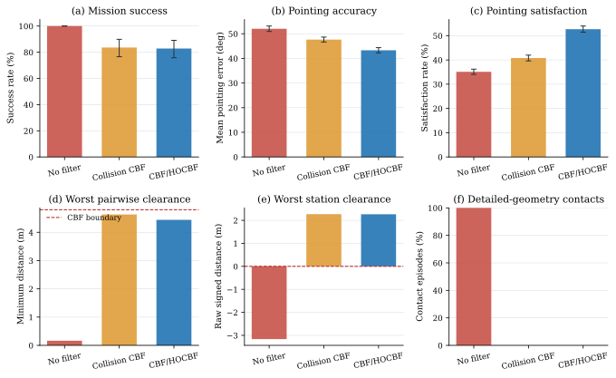
BibTeX
@misc{hou2026safehmarl,
author = {Hou, Junhao and Shen, Qiang},
title = {Graph-Based Safe Hierarchical Multi-Agent Reinforcement Learning for Multi-Spacecraft Close-Proximity Inspection},
year = {2026},
note = {Manuscript}
}